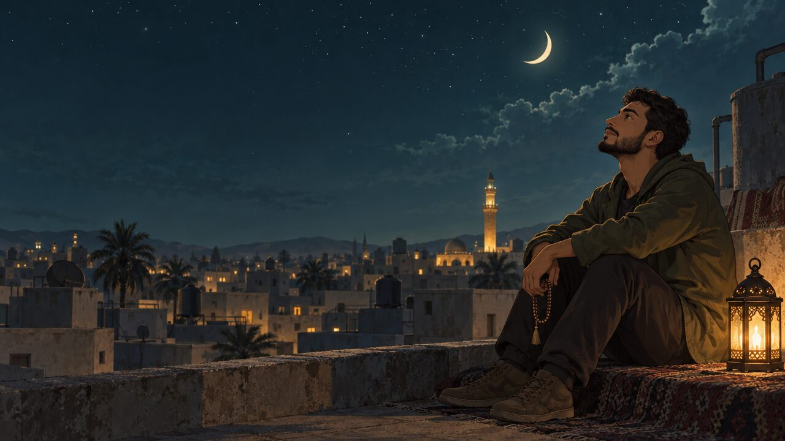

قناة تحكي قصصاً إنسانية هادئة، مستوحاة من قصص حقيقية، يعيشها بطل واحد اسمه يوسف. في كل حلقة يمرّ بضيق، ثم يكتشف معنى من القرآن أو حديث صحيح عن النبي ﷺ يغيّر طريقه: الاستغفار، الرزق، عطايا الله، الصبر، والتوكل.
كيف يفتح الاستغفار الأبواب المغلقة، بقصص وأدلة.
الرزق أوسع من المال: صحة، أهل، طمأنينة، وصحبة صالحة.
نِعَم لا ننتبه لها، وكيف يزيدها الشكر.
حديث صحيح واحد في كل حلقة، يُشرح ببساطة ومثال من الحياة.
﴿ومن يتقِ الله يجعل له مخرجاً﴾ — خيط يربط كل القصص.
الألوان مأخوذة من لحظة ما قبل الفجر: سماء داكنة، نور مصباح نحاسي، وحجر رملي. لا ألوان صارخة ولا تدرجات نيون.
النسبة في كل إطار تقريباً: 60٪ ليل · 15٪ زمرّدي · 12٪ رملي · 10٪ ذهبي · 3٪ طيني.
يوسف يظهر في كل الحلقات، فيتعلّق به المشاهد ويتابع تطوره. حوله شخصيات ثانوية تتكرر.
شخصيات ثانوية متكررة: أم يوسف (مريضة وصابرة، صوت الدعاء في البيت) · مريم أخته الصغرى (أسئلتها البسيطة تفتح الشرح) · الأستاذ كريم صاحب شركة توزيع (باب الرزق في الحلقة الأولى).
تظهر بجانب العناوين داخل الفيديو، وفي بداية كل فصل، وفي الصور المصغرة بحجم صغير. خط واحد بسماكة ثابتة، بلا تعبئة ملوّنة.
تنوّع المكان يمنع الملل. كل مكان يرتبط بمرحلة من مراحل القصة.
نور الفرن، الطحين، صوت الاستغفار. مكان المرشد.
هلال، خزانات ماء، مئذنة بعيدة. لحظات المناجاة.
إضاءة خافتة، فواتير على الطاولة، غرفة الأم. مشاهد الضيق.
أعمدة، سجاد أخضر، ضوء نافذة. مشاهد الطمأنينة.
توابل، أقمشة، زحام. مشاهد الرزق والناس.
زجاج وألوان باردة. مقابلات العمل والرفض.
بلون سيبيا ذهبي، للقصص التراثية التي يحكيها العم صالح.
انعكاس الأضواء على الأرض. نقطة التحول في القصة.
تتوقف القصة، يهدأ الصوت، وتظهر البطاقة 6 إلى 8 ثوانٍ. الآية دائماً بخلفية زمرّدية، والحديث بخلفية بنية دافئة، فيعرف المشاهد الفرق من اللون. ويُذكر المصدر دائماً.
﴿فَقُلْتُ اسْتَغْفِرُوا رَبَّكُمْ إِنَّهُ كَانَ غَفَّارًا يُرْسِلِ السَّمَاءَ عَلَيْكُم مِّدْرَارًا وَيُمْدِدْكُم بِأَمْوَالٍ وَبَنِينَ﴾
«لو أنكم تتوكلون على الله حقَّ توكله، لرزقكم كما يرزق الطير، تغدو خِماصاً وتروح بِطاناً»
نفس الترتيب في كل حلقة، فيعتاد المشاهد عليه ويبقى حتى النهاية.
أصعب لحظة في القصة أولاً، وسؤال يشدّ المشاهد: «ماذا تفعل حين تُغلق كل الأبواب؟»
شعار سكينة يظهر مع صوت ريح خفيفة وأذان بعيد. لا تتجاوز 10 ثوانٍ.
نعيش مع يوسف مشكلته في أماكن متنوعة. ألوان أبرد، والطيني يظهر هنا.
المرشد أو موقف يفتح الباب. هنا تظهر بطاقة الآية ثم بطاقة الحديث، مع شرح بسيط بمثال من الحياة.
يوسف يطبّق. مونتاج أيام، ثم الفرج من حيث لا يحتسب. الألوان تدفأ تدريجياً.
ثلاث نقاط على الشاشة، وتحدٍّ عملي للمشاهد لمدة أسبوع.
دعاء قصير، ثم لقطة تمهّد للحلقة القادمة.
مستوحاة من القصة المشهورة عن الإمام أحمد بن حنبل والخبّاز الذي كان لا يتوقف عن الاستغفار، مع نقلها إلى زماننا وإضافة شخصية يوسف وأحداث جديدة.
لقطة قريبة: يد يوسف تمسك ملفاً. باب زجاجي يُغلق أمامه. ثم بابان آخران بمونتاج سريع.
الراوي: «ستة أشهر بلا عمل… وثلاثة أبواب أُغلقت في وجهه في يوم واحد. لم يكن يعلم أن الباب الذي سيُفتح له، بابُ مخبزٍ صغير… قبل الفجر.»
فواتير على الطاولة، رسالة على الهاتف: «نعتذر، تم اختيار مرشح آخر». صوت سعال أمه من الغرفة المجاورة.
الأم بصوت ضعيف: «يا يوسف… الرزق مكتوب يا ولدي، لكن الباب يحتاج من يطرقه.»
يوسف يبتسم لها، ثم يخرج إلى الشارع ليمشي، لا يستطيع النوم.
يبدأ المطر. كل المحلات مغلقة، إلا نوراً دافئاً في آخر الزقاق. يقف يوسف تحت مظلة المخبز. العم صالح يعجن، ولسانه يتحرك.
العم صالح: «أستغفر الله… أستغفر الله… ادخل يا ابني، المطر لا يرحم.»
يوسف يجلس قرب الفرن. يلاحظ أن الشيخ لا يتوقف عن الاستغفار وهو يعمل. يسأله: «يا عم، لماذا لا تتوقف؟»
العم صالح: «منذ أربعين سنة يا ابني… ما دعوت الله بدعوة إلا رأيتها.»
انتقال بالرسم إلى لوحات ذهبية متحركة: عالم مسافر ليلاً، لا يعرفه أحد، يمنعه حارس المسجد من المبيت، فيستضيفه خبّاز.
العم صالح يحكي: «يُروى أن الإمام أحمد بن حنبل نزل ليلةً عند خبّاز لا يعرفه، فرآه يستغفر طوال عمله. سأله: هل رأيت لهذا أثراً؟ قال الخبّاز: ما دعوت دعوة إلا أُجيبت، إلا واحدة. قال: وما هي؟ قال: أن أرى الإمام أحمد. فقال له: أنا أحمد بن حنبل… واللهِ لقد جُررت إليك جرّاً.»
الشرح: نوح عليه السلام ربط الاستغفار بالمطر والمال والأولاد. الاستغفار ليس كلمة للمذنبين فقط، بل مفتاح للرزق والفرج.
الشرح: إذا كان النبي ﷺ، وهو المغفور له، يستغفر أكثر من سبعين مرة في اليوم، فنحن أحوج. ويعلّم العم صالح يوسف «سيد الاستغفار» من صحيح البخاري.
مونتاج أيام مع عدّاد صغير على الشاشة: «اليوم 1… اليوم 7… اليوم 15». يوسف يصلي الفجر، يستغفر في الطريق، ويستمر في التقديم على الوظائف. لا يجلس منتظراً.
الراوي: «لم يترك الأسباب. كان يطرق الأبواب نهاراً… ويطرق باب السماء ليلاً.»
اليوم 23: المخبز مغلق. العم صالح مريض. يوسف يزوره ويعرض أن يفتح المخبز مكانه أسبوعاً.
يوسف يكتشف أن دفاتر المخبز فوضى. ينظّمها بخبرته في المحاسبة ويكشف أن مورّد الطحين يأخذ ضعف السعر. يتصل بالأستاذ كريم صاحب شركة التوزيع ليصحح الحساب.
الأستاذ كريم يرى الدفاتر ويقول: «من نظّم هذا؟ أبحث عن محاسب أمين منذ شهور.»
يوسف بقميص عمل جديد يمرّ بالمخبز. العم صالح عاد يعجن. ينظر إليه ويبتسم.
العم صالح: «ألم أقل لك يا ابني؟ أستغفر الله…»
يوسف يكمل معه: «…وأتوب إليه.»
1. الاستغفار مفتاح للرزق والفرج (سورة نوح). 2. الاستغفار مع الأخذ بالأسباب، لا بدلاً منها. 3. الرزق قد يأتي من باب لم تتوقعه.
التحدي: استغفر الله 100 مرة كل يوم لمدة 7 أيام، كما في حديث مسلم (2702): «إنه ليُغان على قلبي، وإني لأستغفر الله في اليوم مائة مرة». واكتب في التعليقات ماذا تغيّر.
تنبيه مهم للأمانة العلمية: قصة الإمام أحمد والخبّاز متداولة كثيراً، لكن لا يُعرف لها إسناد ثابت في كتب التراجم. لذلك يقولها العم صالح بصيغة «يُروى»، وتُعرض للاستئناس فقط. أما الدليل فيكون دائماً من القرآن والأحاديث الصحيحة المذكورة بمصادرها. اكتب هذا التنبيه في وصف الفيديو أيضاً.

رسم ثنائي الأبعاد بأسلوب لوحات سينمائية، ألوان هادئة، ضوء دافئ. يمكن تحريكها بحركة كاميرا بطيئة (بارالاكس).
يوسف يخاف أن يفقد عمله الجديد. مريم تطعم الحمام على السطح.
حديث الطير — الترمذييوسف يكتب كل ليلة ثلاث نِعم. تتغير نظرته لبيته الصغير.
﴿لَئِن شَكَرْتُمْ لَأَزِيدَنَّكُمْ﴾ — إبراهيم 7يوسف يرى جاراً محتاجاً ويتصدّق دون أن يعلم أحد.
«ما نقصت صدقة من مال» — مسلممرض الأم يشتد، ويوسف يتعلّم أن البِرّ باب من أبواب الرزق.
«من سرّه أن يُبسط له في رزقه… فليصل رحمه» — البخاري ومسلمقصة كعب بن مالك يحكيها العم صالح، ويوسف يمر بظلم في العمل.
سورة التوبة 118 — صحيح البخاري